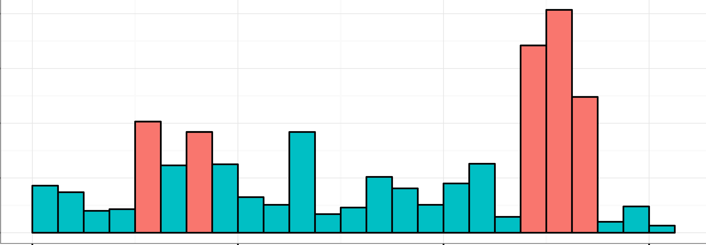
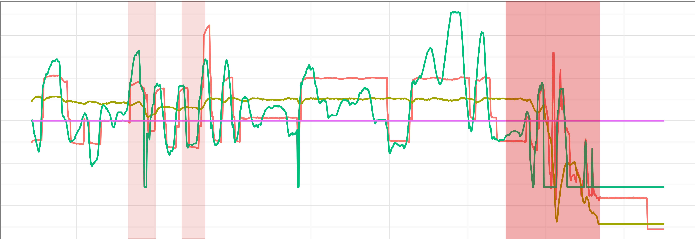
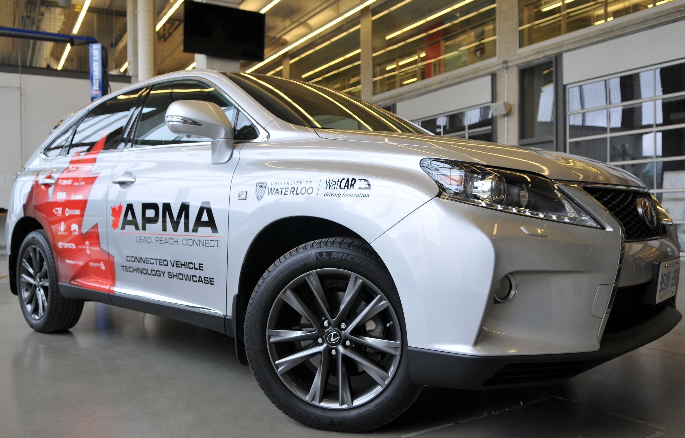

Success Stories
Regression Tesing with QNX
Our strategic relationship with QNX, launched in 2014, has allowed
us to provide extensive support for analysis of devices powered by the
QNX operating system called QNX Neutrino. We are working together to
establish new practices for using the QNX log daa for anomaly detection,
identification of systemic problems, and failure prognosis.
Acerta has been incorporated as part of the QNX regression testing
workflow to deliver automatic anomaly detection and evaluation of
non-functional system attributes.
CAN Bus Traffic Analysis
Acerta can detect anomalies in systems by analyzing the messaging behavior on the CAN bus. Acerta only needs metadata, not message content, to detect disturbances in system communications.
Automatically Detecting Anomalies
Acerta has applied and validated its algorithms on signals collected from vehicles. Using a fusion of state-of-the-art analytics, Acerta can easily identify areas that demonstrate significant anomalies.


IIoT Prognosis and Diagnosis

Vehicle Health Management
Many operators are faced with the issue of analyzing and understanding vehicle operational
data to diagnose system failures. Once a failure occurs, multiple hours are needed to determine the root
cause of vehicle failure. Acerta's anomaly detection can save many hours or laborious
effort by identifying areas of the data where anomalies occured, identifying the
trends leading up to the anomaly, and highlighting the signals responsible for the anomaly.
Furthermore, only previously known fault confitions can be monitored in the vehicle
real-time and flagged for the oprators to examine. The issue is deriving more complex
conditions that are previously not obvious. Acerta aids in understanding what parameters,
their combinations, and ranges should be used to create new triggers.

Airplance Health Management
Companies like Bombardier dispatch aiplanes all over the world. Component failure can have far reaching effects on the efficient operation of the airline. If facilities don't have the necessary components on site, the plane can't fly until the component arrives. This could mean a substantial loss of time and potential profit from flight delays and airplane storage. With effective data analysis and timely dailure prognosis, replacements will arrive right when they are needed, not long after components fail.

Advanced Manufacturing
In production and process industries, optimizing output is a major challenge amount plant managers and executives. By understanding the factors that are preventing 100% availability of assets, a mannufacturer can manke smart decisions to boost productivity. Knowing when critical equipment needs servicing before it fails saves time and money. Acerta helps manufacturers automatically analyze their equipment by detecting anomalies and predicting future failures.
Receive timely notifications when equipment service will be needed.